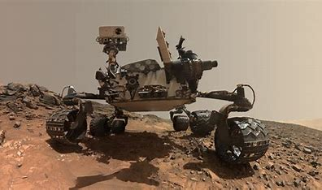

Launch Date: July 16, 1969
First manned mission to land on the Moon. Neil Armstrong and Buzz Aldrin became the first and second humans to walk on the lunar surface.
Launch Date: September 5, 1977
NASA's Voyager 1 is the first human-made object to enter interstellar space, providing invaluable data about our solar system.
Launch Date: November 26, 2011
This rover has been exploring the Gale Crater on Mars since August 2012, conducting various scientific experiments to assess Mars' habitability.
Launch Date: April 24, 1990
The Hubble Space Telescope has provided some of the most detailed images of distant galaxies, nebulae, and other astronomical phenomena.
Launch Date: November 20, 1998
The ISS is a space environment research laboratory where scientific research is conducted in astrobiology, astronomy, meteorology, and physics.